Sandstorm Apps
Ghost
A port of Ghost, a beautifully-designed blogging platform. Use Ghost in Sandstorm to edit your blog, then publish it to any domain you control.
Read more on the Sandstorm blog »
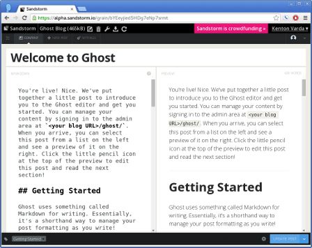
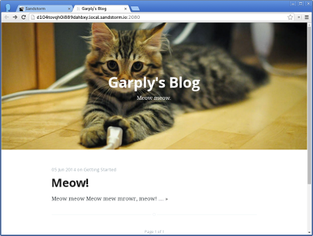
ShareLaTeX
A port of ShareLaTeX, a collaborative LaTeX editor, used for typesetting scientific papers. Stop installing arcane tools to compile LaTeX; use this Sandstorm app instead.
Read more on the Sandstorm blog »
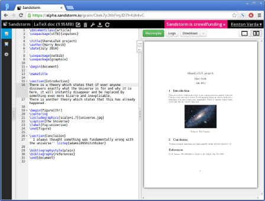
Tiny Tiny RSS
A port of Tiny Tiny RSS, an RSS feed reader. Since it's a Sandstorm app, it won't disappear.
Read more on the Sandstorm blog »
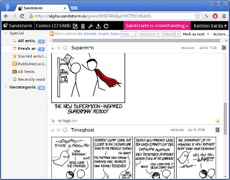
EtherCalc
Ported by: Jacob Weisz
License: CPAL / Artistic 2.0
Code: On Github
This is a port of EtherCalc, a collaborative spreadsheet editor.
Note: Despite the similar names, Etherpad and EtherCalc are not related.
Read more on the Sandstorm blog »
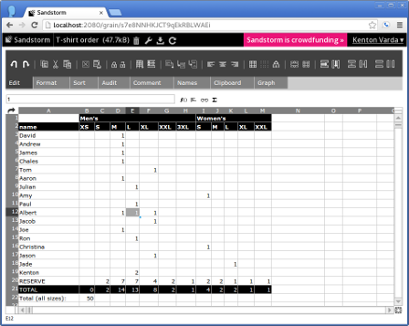
Mailpile
This is a port of Mailpile Alpha II, an e-mail app.
Note: Mailpile is still in alpha. See our blog post about it.
Read more on the Sandstorm blog »
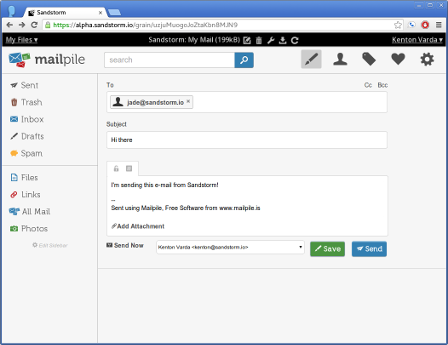
Roundcube
This is a port of Roundcube, an e-mail app.
This package also bundles Dovecot, an open source IMAP server. We automatically set up Dovecot behind the scenes to work with Roundcube; you don't need to worry about it.
Read more on the Sandstorm blog »
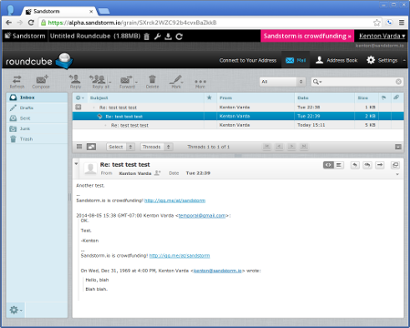
MediaGoblin
Ported by: Jason Paryani&Judy Tuan
License: GNU AGPL
Code: On Github
A port of MediaGoblin, a Free Software federated media publishing platform. An alternative to Flickr, YouTube, SoundCloud, etc.
Note: Due to limitations in the Sandstorm alpha, we currently have disabled video and atom feeds. These features will be enabled later.
Read more on the Sandstorm blog »
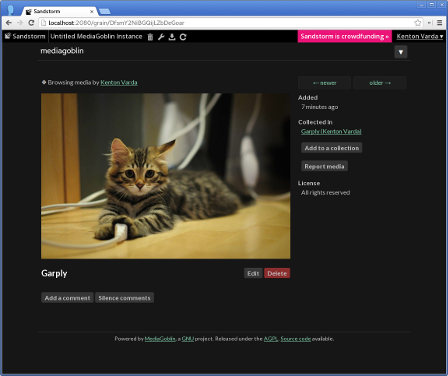
IPython Notebook
A port of IPython Notebook, a web-based interactive computational environment where you can execute Python code, plot graphs, render equations, and more.
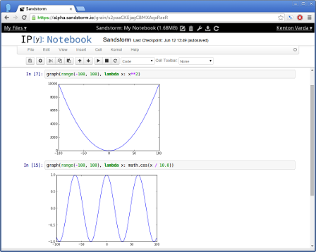
Game of Y
Ported by: Kenton Varda
License: GNU AGPL
Code: On Github
(Ported using meteor-spk with no code changes)
A port of Hyperbotics' implementation of The Game of Y, a strategy board game. The goal is to connect all three sides using pieces of your color before your opponent does. See Hyperbotics' analysis of the game.
This game was ported as a demonstration of the meteor-spk tool for trivially porting Meteor apps to Sandstorm.
"The Game of Y" is a trademark of Kadon Enterprises, Inc., used by Hyperbotics with permission.
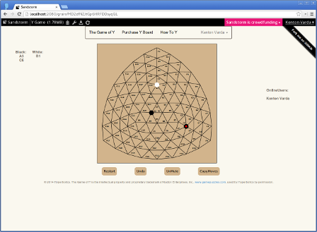
Hacker CMS
This is a mash-up of Jekyll, Ace, and jsTree to create a Markdown-based web site editing and publishing app. This app was stiched together over the course of one day by Kenton.
Read more on the Sandstorm blog »

Duoludo
A minimalist platformer game with checkpoints, replay, and collaboration. A port of duoludo.
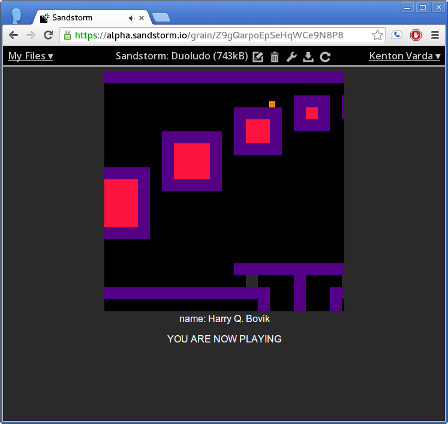
Acronymy
A little game / tech demo. The objective is to define every English word as an acronym of other words. The app is notable in that it is written in Rust directly against the low-level Sandstorm API, thus avoiding the need for an HTTP server.
Also try David's shared instance.
Meteor Todo List
This is the "Todo List" example application that comes with the Meteor development tools. No code changes were necessary.
Web Shell
A very simple front-end to a Busybox shell. Can be used to poke at the Sandstorm sandbox.
MediaWiki
Ported by: Jason Paryani and Joe Lee
License: GNU GPL
Code: On Github
A port of MediaWiki, the software that powers Wikipedia. Use to host private wikis accessible only to those you share with.
Your App Here
Have you written a Sandstorm app that you'd like to see here? Let us know.